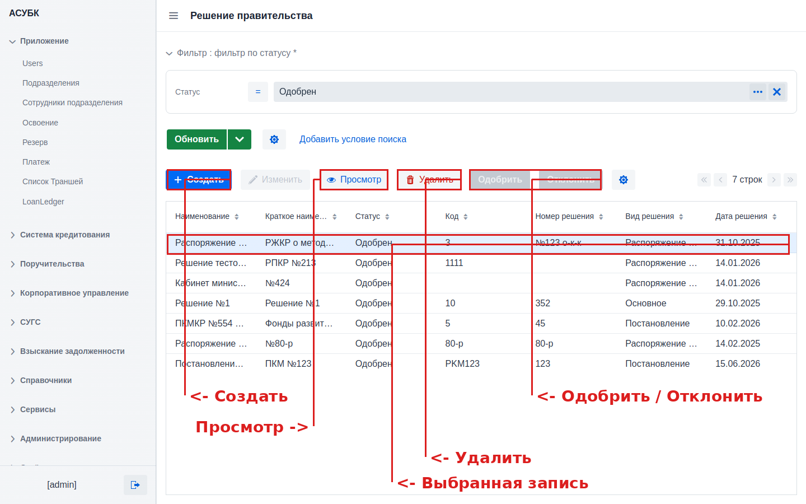
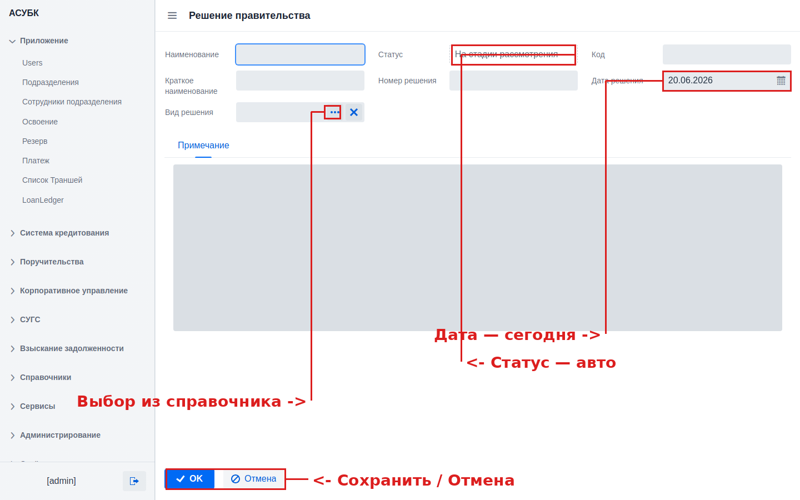
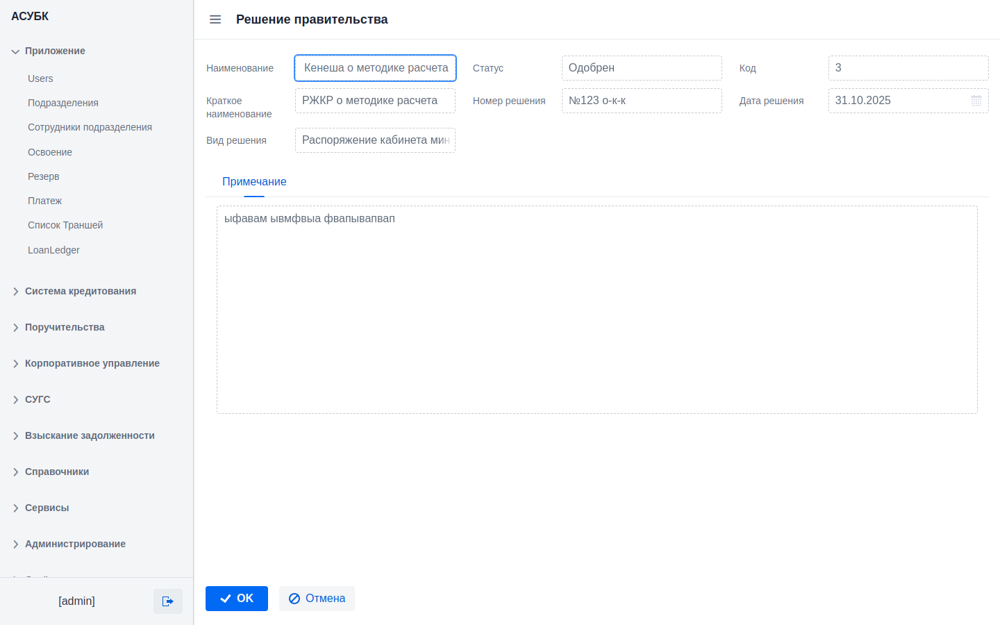

Раздел 2. Государственное решение (Решение правительства)
Тестовая среда: https://fkftest.okmot.kg/gov-decisions · Версия документа 1.0 · 20.06.2026
Содержание
Назначение раздела
Как открыть раздел
Список решений
Жизненный цикл решения (статусы)
Создание нового решения
Просмотр и изменение
Одобрение и отклонение
Удаление
Поля решения (справочно)
1. Назначение раздела
Государственное решение (в системе — «Решение правительства») — это нормативный
акт (распоряжение, постановление и т. п.), который служит правовым основанием для
кредитования. Это первый шаг жизненного цикла кредита: кредитные программы, а через
них и займы, всегда ссылаются на решение, которое их разрешило.
Раздел позволяет вести реестр таких решений: создавать записи, проводить их через
процедуру согласования (одобрение / отклонение), просматривать и удалять.
2. Как открыть раздел
Войдите в систему (см. Раздел 1 «Авторизация») и в левом меню навигации откройте пункт
«Решение правительства». Прямой адрес раздела:
https://fkftest.okmot.kg/gov-decisions
Видимость раздела зависит от прав доступа. Если пункта меню нет — у вашей
учётной записи нет прав на этот раздел. Обратитесь к администратору.
3. Список решений
Раздел открывается списком уже зарегистрированных решений.

Рис. 1. Список решений: панель действий, фильтр, таблица и выбранная запись.
Панель действий (кнопки над таблицей)
Кнопка
Назначение
Когда доступна
+ Создать
Создать новое решение
Всегда
Изменить
Редактировать выбранную запись
Только для статуса «На стадии рассмотрения»
Просмотр
Открыть запись только для чтения
После выбора записи
Удалить
Удалить выбранную запись
После выбора записи
Одобрить
Перевести решение в статус «Одобрен»
Только для «На стадии рассмотрения»
Отклонить
Отклонить решение (статус «Закрыт»)
Только для «На стадии рассмотрения»
Как выбрать запись. Щёлкните по строке в таблице — она подсветится (см. рис. 1).
После этого становятся доступны кнопки действий над выбранной записью. Кнопки «Одобрить» и
«Отклонить» остаются неактивными (серыми), если решение уже одобрено или закрыто.
Прочие элементы
Фильтр по статусу — вверху можно отфильтровать список по статусу (например, показать только «Одобрен»). Кнопка «Добавить условие поиска» добавляет другие условия; крестик ✕ снимает фильтр.
Обновить — перечитывает список из базы.
Столбцы: Наименование · Краткое наименование · Статус · Код · Номер решения · Вид решения · Дата решения. Любой столбец сортируется щелчком по заголовку.
Пагинация (справа, «N строк») — переход между страницами списка.
4. Жизненный цикл решения (статусы)
Каждое решение проходит через статусы:
На стадии рассмотрения→Одобрен/Закрыт (отклонён)
На стадии рассмотрения — присваивается автоматически при создании. На этом этапе запись можно изменять, одобрять или отклонять.
Одобрен — решение согласовано и может использоваться кредитными программами. Изменение и повторное одобрение недоступны.
Закрыт — конечный статус после отклонения. Запись недоступна для изменения и одобрения.
Разделение ролей (maker–checker). Создание решения и его одобрение — разные действия.
Новая запись всегда попадает в очередь на рассмотрение, её нельзя создать сразу одобренной.
5. Создание нового решения
Нажмите «+ Создать» — откроется форма ввода.

Рис. 2. Форма создания: статус и дата заполняются автоматически, вид решения выбирается из справочника.
1Заполните обязательные поля
Заполните пять обязательных полей: Наименование, Краткое наименование,
Код, Номер решения и Вид решения.
2Выберите «Вид решения» из справочника
Нажмите кнопку ••• справа от поля «Вид решения» и выберите значение
(например: Распоряжение, Постановление, Основное и др.). Крестик ✕ очищает поле.
3Проверьте автоматические поля
Статус = «На стадии рассмотрения» (только для чтения). Дата решения
по умолчанию — сегодняшняя; при необходимости измените её в календаре.
4При необходимости — примечание
На вкладке «Примечание» можно ввести произвольный поясняющий текст (необязательно).
5Сохраните
Нажмите OK. Запись появится в списке со статусом «На стадии рассмотрения».
Кнопка «Отмена» закрывает форму без сохранения.
Проверка обязательных полей. Если сохранить форму с пустыми обязательными полями,
система покажет сообщение «Заполните все обязательные поля!» и подсветит
незаполненные поля красным.
6. Просмотр и изменение
Выберите запись и нажмите «Просмотр» — откроется карточка решения в режиме
только для чтения.

Рис. 3. Карточка решения в режиме просмотра (поля недоступны для редактирования).
Для редактирования используйте «Изменить». Изменение доступно только для
записей со статусом «На стадии рассмотрения»; одобренные и закрытые записи изменить нельзя.
7. Одобрение и отклонение
Выберите в списке решение со статусом «На стадии рассмотрения».
Нажмите «Одобрить» — статус сменится на «Одобрен».
Либо нажмите «Отклонить» — статус сменится на «Закрыт».
Внимание: действие необратимо. В текущей версии отклонённое (закрытое) решение
нельзя вернуть на рассмотрение через интерфейс. Проверяйте выбранную запись перед
одобрением или отклонением.
8. Удаление
Выберите запись и нажмите «Удалить». Удаляйте только ошибочно созданные записи.
Не удаляйте решения, на которые уже могут ссылаться кредитные программы, — это нарушает
целостность данных.